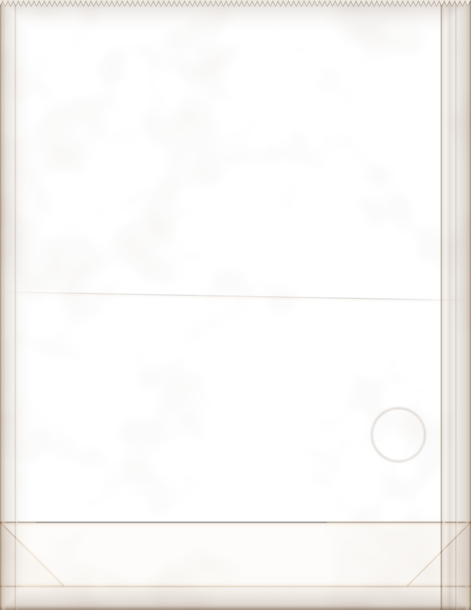

Y CAFETERÍA
ALMUERZO 11 A 3★CAFÉ TODO EL DÍA★CENA HASTA TARDE
AlmuerzoHot plate
Arroz con pollo
$4.95
Chicken thighs browned hard, then set on long-grain rice cooked slow with onion, green pepper, garlic, cilantro, achiote, green olives and capers.
Big enough for two brothers.
Every plate comes with pan de agua and butter.
Tostones
$1.50
Green plantain fried, smashed flat and fried again till crisp, with garlic mojo for dipping.
BebidasClocking off
Payday cerveza
$2.75
Cold lager over ice with fresh lime, tomato juice, hot sauce and a dash of Worcestershire, in a glass rimmed with chili salt, slipped into a paper sack.
Friday is payday. Cash only.
Malta
$1
Dark, sweet barley soda, ice cold in the bottle. No alcohol.
Café con leche
65¢
Dark roast brewed strong and poured into steamed milk, sugared the way you take it.
Café negro
50¢
Small cup, black and strong, the way the night shift drinks it.
ON THE MIDNIGHT TOUR?
Token clerks, motormen, conductors and transit cops working nights: coffee is on the house after twelve. Show your pass.
Decoys too. We never saw you.
PedidosOrders
Pastelitos, mallorcas, token cookies and pan de agua by the dozen for the station house, the depot or the block party. Call a day ahead.
Pan de agua
$1.25
Crusty white loaf, soft inside, baked twice a day. Ask for it buttered and pressed on the grill.
A loaf for a token.
Hecha de papel reciclado.
Made from recycled paper.
Please use this bag again.
Made from recycled paper.
Please use this bag again.
¡Gracias!
THANK YOU · VUELVA PRONTO
Prices good through 1995.
